전기공사기사 (2006-03-05 기출문제)
1과목: 전기응용 및 공사재료
1. 루소 선도가 그림과 같이 표시되는 광원의 전 광속 [lm]을 구하시오.(오류 신고가 접수된 문제입니다. 반드시 정답과 해설을 확인하시기 바랍니다.)
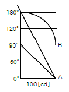
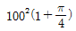
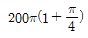
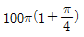
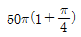
(정답률: 51%)

2. 용접부의 비파괴 검사에 필요 없는 것은?
- 고주파 검사
- 방사선 검사
- 자기 검사
- 초음파 검사
(정답률: 73%)
3. 전기차량의 구동용 주전동기의 특성을 설명한 것이다. 틀린 것은?
- 직류직권 전동기의 회전수 n은 단자전압에 비례하고 부하전류에 반비례한다.
- 직류직권 전동기의 토크는 전류의 2승에 비례한다.
- 유도 전동기는 VVVF 인버터 장치가 필요하다.
- 유도 전동기 2차 전류는 자속 P와 주파수에 반비례한다.
(정답률: 78%)
4. 다음에서 비선형 소자는 어느 것인가?(오류 신고가 접수된 문제입니다. 반드시 정답과 해설을 확인하시기 바랍니다.)
- bipolar 트랜지스터
- MOS-FET
- J-FET
- SCR
(정답률: 69%)
5. 물체가 그 온도에 상응하여 방출하는 복사를 온도복사라 한다. 어떤 스펙트럼을 이루는가?
- 연속 스펙트럼
- 선 스펙트럼
- 대상 스펙트럼
- 구형 스펙트럼
(정답률: 77%)
6. 투과율이 40[%]인 완전확산성의 유백색 유리판을 천장 위에서 조사하여 방바닥에서 본 휘도를 0.4[cd/cm2]로 하려면 천장 위의 유리면의 조도[lx]를 구하시오.
- 104π
- 94π
- 74π
- 64π
(정답률: 70%)
7. 220[W] 전구를 우유색 구형 글로브에 넣었을 경우 우유색 유리 반사율이 30[%], 투과율은 50[%]라고 할때 글로브의 효율[%]을 구하면?
- 약 88
- 약 83
- 약 76
- 약 71
(정답률: 72%)
8. 5,700[Kcal/Kg]의 석탄을 150[t] 소비하여 200,000[KWh]를 발전하였을 때의 발전소의 효율은 몇 [%]인가?
- 10
- 20
- 30
- 40
(정답률: 67%)
9. [kW]는 몇 [Kg∙/s]에 해당하는가?
- 550
- 102
- 75
- 50
(정답률: 67%)
10. 전류가 통과할 때 전극 표면 부근에 있는 반응 생성물의 활동도(또는 농도)가 변화해서 이것을 보충하는 데에 과잉 전압이 요구되는 것은?
- 농도 과전압
- 천이 과전압
- 저항 과전압
- 결정화 과전압
(정답률: 75%)
11. 절연 재료의 구비 조건이 아닌 것은?
- 절연 저항이 클 것
- tan δ 가 클 것
- 유전체 손실이 작을 것
- 기계적 강도가 클 것
(정답률: 85%)
12. 피뢰기 자체의 고장이 계통사고에 파급되는 것을 방지하기 위한 장치는?
- 디스콘넥터(Disconnector)
- 압소바(Absorbar)
- 콘넥터(Connector)
- 어레스터(Arrseter)
(정답률: 92%)
13. 전선의 약호에서 RB의 품명은?
- 바인드용 동비닐선
- 폴리에틸렌 절연전선
- 비닐 절연전선
- 600V 고무 절연전선
(정답률: 58%)
14. 지선의 시방 세목 등 지주의 대용에서 가공전선로의 지지물에 시설하는 지선은 다음에 의하여 시설한다. 잘못된 것은?
- 지선에 연선을 사용할 경우 소선 3가닥 이상의 연선일 것
- 지선에 연선을 사용할 경우 지름이 2.6[mm]이상의 금속선을 사용한다.
- 지선의 근가는 지선의 인장 하중에 충분히 견디도록 시설할 것
- 소선의 인장강도는 최소 80[Kg/mm2 ]이상의 것을 사용한다.
(정답률: 71%)
15. 절연의 종류가 아닌 것은?
- D종
- A종
- B종
- H종
(정답률: 90%)
16. 높은온도 및 기름에 가장 잘견디며 절연성, 내온성, 내유성이 풍부하며 연피케이블에 사용하는 전기용 테이프는?
- 면테이프
- 비닐테이프
- 리노테이프
- 고무테이프
(정답률: 87%)
17. 금속관의 부속품중 전선관 상호의 접속용으로서 관이 고정 되어 있을 때 또는 관자재를 돌릴 수 없을 때 사용되는 것은?
- 부 싱
- 로크너드
- 유니언 커플링
- 유니버어설
(정답률: 74%)
18. 분전함에 내장되는 부품은?
- COS
- VCB
- UVR
- MCCB
(정답률: 83%)
19. 아크 용접기의 2차전류가 100[A] 이하 일 때 정격 사용률이 50[%]인 경우 용접용 케이블 또는 기타의 케이블 굵기는 몇 [mm2]를 시설하여야 한는가?(오류 신고가 접수된 문제입니다. 반드시 정답과 해설을 확인하시기 바랍니다.)
- 6
- 14
- 22
- 38
(정답률: 33%)
20. 예비전원으로 시설하는 축전지에서 부하에 이르는 전로에는 어떠한 기기를 시설하여야 하는가?
- 전력량계
- 변류기
- 전류제한기
- 개폐기 및 과전류 차단기
(정답률: 87%)
2과목: 전력공학
21. 한류리액터를 사용하는 가장 큰 목적은?
- 충전전류의 제한
- 접지전류의 제한
- 누설전류의 제한
- 단락전류의 제한
(정답률: 16%)
22. 피뢰기의 충격방전 개시전압은 무엇으로 표시하는가?
- 직류전압의 크기
- 충격파의 평균치
- 충격파의 최대치
- 충격파의 실효치
(정답률: 15%)
23. 전선 및 기계기구를 보호하기 위한 목적으로 전로 중 필요한 개소에는 과전류차단기를 시설하여야 하는데 다음 중 필요한 개소가 아닌 것은?
- 인입구
- 간선의 전원측
- 평형부하의 말단
- 분기점
(정답률: 6%)
24. 그림과 같이 수심이 5m인 수조가 있다. 이 수조의 측면에 미치는 수압 P0[kg/m2]는 얼마인가?
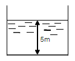
- 2,500
- 3,000
- 3,500
- 4,000
(정답률: 9%)
25. 전력용콘덴서를 변전소에 설치할 때 직렬리액터를 설치코자 한다. 직렬리액터의 용량을 결정하는 식은? (단, f0는 전원의 기본주파수, C 는 역률개선용콘덴서의 용량, L은 직렬리액터의 용량임)
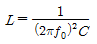
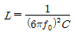
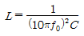
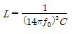
(정답률: 11%)
26. 반지름 15mm 의 강심알루미늄 연선으로 구성된 완전 연가된 3상 1회선 송전선로가 있다. 각 상간의 등가 선간거리가 3,000mm 라고 할 때, 이 선로의 작용인덕턴스는 약 몇 mH/km인가?
- 0.8
- 1.1
- 1.5
- 1.8
(정답률: 9%)
27. 경간이 200m 인 가공전선로가 있다. 사용전선의 길이는 경간보다 몇 m 더 길게 하면 되는가? (단, 사용전선의 1m 당 무게는 2kg, 인장하중은 4,000kg, 전선의 안전율은 2 로 하고 풍압하중은 무시한다.)
- 1/2
- √2
- 1/3
- √3
(정답률: 9%)
28. 단로기에 대한 설명으로 적합하지 않은 것은?
- 소호장치가 있어 아크를 소멸시킨다.
- 무부하 및 여자전류의 개폐에 사용된다.
- 배전용 단로기는 보통 디스컨넥팅 바로 개폐한다.
- 회로의 분리 또는 계통의 접속 변경시 사용한다.
(정답률: 13%)
29. 그림의 F 점에서 3상 단락고장이 생겼다. 발전기쪽에서 본 3상 단락전류는 kA가 되는가? (단, 154kV 송전선의 리액턴스는 1,000MVA를 기준으로 하여 2%/km 이다.)
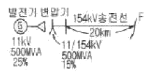
- 43.7
- 47.7
- 53.7
- 59.7
(정답률: 7%)
30. 우리나라에서 사용하는 공칭전압 22,000(22,000/38,000)에서 괄호안인 (22,000/38,000)의 의미는?
- (선간전압/상전압)
- (비접지전압/접지전압)
- (상전압/선간전압)
- (접지전압/비접지전압)
(정답률: 9%)
31. 화력발전이 점유하는 비중이 수력발전에 비하여 대단히 큰 전력계통에서 수력발전의 운전방법으로 가장 적절한 것은?
- 일정출력운전
- 기저부하운전
- 예비출력운전
- 첨두부하운전
(정답률: 7%)
32. 3상 선로의 전압이 V[V]이고, P[W], 역률 cosθ인 부하에서 한 선의 저항이 R[Ω] 이라면 이 3상 선로의 전체 전력손실은 몇 W가 되겠는가?
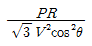
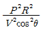
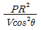
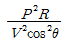
(정답률: 8%)
33. 전력계통의 과도안정도 향상 대책과 관계 없는 것은?
- 속응여자방식 채용
- 계통의 연계
- 중간조상방식 채용
- 빠른 역률 조정
(정답률: 8%)
34. 전력계통의 주파수 변동은 주로 무엇의 변화에 기인하는가?
- 유효전력
- 무효전력
- 계통 전압
- 계통 임피던스
(정답률: 5%)
35. 다음 중 감전 방지대책으로 적절하지 못한 것은?
- 회로 전압의 승압
- 누전 차단기의 설치
- 이중 절연 기기를 사용
- 기계 기구류의 외함을 접지
(정답률: 15%)
36. 네트워크 배전방식의 장점이 아닌 것은?
- 정전이 적다.
- 전압변동이 적다.
- 인축의 접촉사고가 적어진다.
- 부하 증가에 대한 적응성이 크다.
(정답률: 14%)
37. 발열량 5,000kcal/kg의 석탄을 사용하고 있는 기력발전소가 있다. 이 발전소의 종합효율이 30%라면, 30억kWh를 발생하는데 필요한 석탄량은 몇 톤인가?
- 300,000
- 500,000
- 860,000
- 1,720,000
(정답률: 10%)
38. 다음 중 송전선로에서 이상전압이 가장 크게 발생하기 쉬운 경우는?
- 무부하 송전선로를 폐로하는 경우
- 무부하 송전선로를 개로하는 경우
- 부하 송전선로를 폐로하는 경우
- 부하 송전선로를 개로하는 경우
(정답률: 15%)
39. 가공지선에 대한 설명 중 틀린 것은?
- 적격뇌에 대하여 특히 유효하며 탑 상부에 시설하므로 뇌는 주로 가공지선에 내습한다.
- 가공지선 때문에 송전선로의 대지정전용량이 감소하므로 대지사이에 방전할 때 유도전압이 특히 커서 차폐 효과가 좋다.
- 송전선의 지락시 지락전류의 일부가 가공지선에 흘러 차폐작용을 하므로 전자유도장해를 적게 할 수도 있다.
- 유도뢰 서지에 대하여도 그 가설구간 전체에 사고 방지의 효과가 있다.
(정답률: 10%)
40. 계전기의 반환시 특성이란?
- 동작전류가 클수록 동작시간이 길어진다.
- 동작전류가 흐르는 순간에 동작한다.
- 동작전류에 관계없이 동작시간은 일정하다.
- 동작전류가 크면 동작시간은 짧아진다.
(정답률: 13%)
3과목: 전기기기
41. 교류기에서 유기기전력의 특정 고주파분을 제거하고 또 권선을 절약하기 위하여 자주 사용되는 권선법은?
- 전절권
- 분포권
- 집중권
- 단절권
(정답률: 10%)
42. 그림과 같은 정합변압기(matching transformer)가 있다. R2에 주어지는 전력이 최대가 되는 권선비 a는?
- 약 2
- 약 1.16
- 약 2.16
- 약 3.16
(정답률: 7%)
43. 15[kW] 3상유도 전동기의 기계손이 350[W] 전부하시의 슬립이 3[%]이다. 전부하시의 2차 동손[W]은?
- 275
- 395
- 426
- 475
(정답률: 7%)
44. 보통 농형에 비하여 2중 농형 전동기의 특징인 것은?
- 최대 토크가 크다.
- 손실이 작다.
- 기동 토크가 크다.
- 슬림이 크다.
(정답률: 9%)
45. 동기 전동기의 전기자 반작용에 있어서 맞는 것은?
- 전압보다 90°앞선 전류는 주자속을 감자한다.
- 전압보다 90°느린 전류는 주자속을 감자한다.
- 전압과 동상인 전류는 주자속을 감자한다.
- 전압보다 90°느린 전류는 주자속을 교차 자화한다.
(정답률: 8%)
46. 3상 권선형 유도 전동기의 전부하 슬립이 5[%], 2차 1상의 저하 0.5[Ω]이다. 이 전동기의 기동 토크를 전부하 토크와 같도록 하려면 외부에서 2차에 삽입할 저항은 몇 [Ω]인가?
- 10
- 9.5
- 9
- 8.5
(정답률: 8%)
47. 3상 배전선에 접속된 V결선의 변압기에서 전부하시의 출력을 P[kVA]라 하면, 같은 변압기 한대를 증설하여 △결선하였을 때의 정격출력[KVA]는?
- (3/2)P
- (2/√3)P
- √3P
- 2P
(정답률: 7%)
48. 교류 직류 양용전동기(Universal motor), 또는 만능 전동기라고 하는 전동기는?
- 단상반발전동기
- 3상직권전동기
- 단상직권정류자전동기
- 3상분권정류자전동기
(정답률: 10%)
49. 동기 조상기를 부족 여자하면 다음 상수의 어떤 특성과 같은가?
- C
- R
- L
- 공진
(정답률: 10%)
50. 다이오드를 사용한 정류회로에서 여러 개를 직렬로 연결하여 사용할 경우 얻는 효과는?
- 다이오드를 과전류로부터 보호
- 다이오드를 과전압으로부터 보호
- 부하출력의 역동률 감소
- 전력공급의 증대
(정답률: 6%)
51. 변압기에서 역률 100%일 때의 전압변동률 ε은 어떻게 표시되는가?
- % 저항 강하
- % 리액턴스 강하
- % 써셉턴스 강하
- % 임피던스 전압
(정답률: 11%)
52. 정격 출력시 부하손/고정손의 비는 2 이고, 효율 0.8인 어느 발전기의 1/2 정격 출력시의 효율은?
- 0.7
- 0.75
- 0.8
- 0.83
(정답률: 8%)
53. 단상 유도전동기의 기동에 브러시를 필요로 하는 것은?
- 분상 기동형
- 반발 기동형
- 콘덴서 분상 기동형
- 동기임피던스
(정답률: 7%)
54. 동기 발전기의 돌발 단락 전류를 주로 제한 하는 것은?
- 동기리액턴스
- 권선저항
- 누설리액턴스
- 동기임피던스
(정답률: 11%)
55. 직류기의 최대효율이 되는 경우는 어느 것인가?
- 고정손 - 부하손
- 기계손 - 전기자동손
- 와류손 - 히스테리시스손
- 전부하동선 - 철손
(정답률: 7%)
56. 그림과 같은 단상 전파제어회로의 전원 전압의 최대치가 2300[V]이다. 저항 2.3[Ω], 유도리액턴스가 2.3[Ω]인 부하에 전력을 공급하고자 한다. 제어범위는?
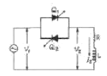
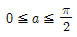
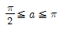
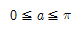
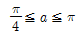
(정답률: 6%)
57. 보통 전기기계에서는 규소강판을 성층하여 사용하는 경우가 많다. 성층하는 이유는 다음중 어느 것을 줄이기 위한 것인가?
- 히스테리시스손
- 와류손
- 동손
- 기계손
(정답률: 12%)
58. 단상 50[kVA] 1차 3300[V], 2차 210[V] 60[Hz] 1차 권회수 550, 철심의 유효단면적 150[cm2 ]의 변압기 철심의 자속밀도 [Wb/mm2 ]는?
- 약 2.0
- 약 1.5
- 약 1.2
- 약 1.0
(정답률: 8%)
59. 동기속도를 2배로 하였을 때 3상 유도전동기의 동기와 트는 몇배가 되는가?
- 1
- 2
- 3
- 4
(정답률: 8%)
60. 직류복권 발전기를 병렬운전할 때, 반드시 필요한 것은?
- 과부하 계전기
- 균압모선
- 용량이 같을 것
- 외부특성 곡선이 일치할 것
(정답률: 8%)
4과목: 회로이론 및 제어공학
61. R=10[Ω] L=10[mH] C=1[㎌]인 직렬회로에 100[V] 전압을 가했을 때 공진의 첨예도 Q는 얼마인가?
- 1000
- 100
- 10
- 1
(정답률: 13%)
62. 비정현파를 구성하는 일반적인 성분이 아닌 것은?
- 기본파
- 고조파
- 직류분
- 삼각파
(정답률: 12%)
63. R-L 직렬회로에서 주파수가 변할 때 임피던스 궤적은?
- 4사분면 내의 직선
- 1사분면 내의 반원
- 2사분면 내의 직선
- 1사분면 내의 직선
(정답률: 7%)
64. 그림과 같은 회로에 t=0에서 s를 닫을 때의 방전 과도 전류 i(t) [A]는?
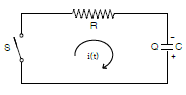
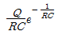
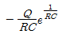
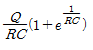
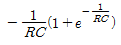
(정답률: 8%)
65. 대칭 5상 교류에서 선간 전압과 상 전압간의 위상차는?
- 27°
- 36°
- 54°
- 72°
(정답률: 11%)
66. 그림과 같은 회로에서 E1과 E2는 각각 100[V] 이면서 60°의 위상차가 있다. 유도 리액턴스의 단자전압은? (단, R=10[Ω], XL=30[Ω] 임)
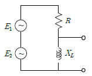
- 164 [V]
- 174 [V]
- 200 [V]
- 150 [V]
(정답률: 5%)
67. 전송 선로에서 무손실일 때 L=96[mH], C=0.6[㎌]이면 특성 임피던스 [Ω]는?
- 400
- 500
- 600
- 700
(정답률: 16%)
68. 그림의 사다리꼴 회로에서 부하전압 VL의 크기 [V]는?
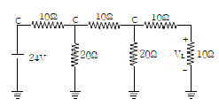
- 3
- 3.25
- 4
- 4.15
(정답률: 8%)
69. 다음 회로의 4단자 정수는?
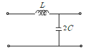
- A = 1-2ω2 LC, B = jωL, C = j2ωC, D = 1
- A = 2ω2 LC, B = jωC, C = j2ω, D = 1
- A = 1-2ω2 LC, B = jωL, C = jωC, D = 0
- A = 2ω2 LC, B = jωL, C = j2ωC, D = 0
(정답률: 9%)
70. f(t)=te-2t일 때 라플라스 변환은?
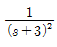
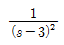
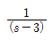
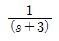
(정답률: 13%)
71. 계의 이득 여유는 보드 선도에서 위상곡선이 ( )의 점에서의 이득값이 된다. ( ) 에 알맞은 것은?
- 90°
- 180°
- -90°
- -180°
(정답률: 9%)
72. 다음 설명 중 옳지 않은 것은?
- S평면의 우측면은 Z평면의 원점에 중심을 둔 단위 원 내부로 사상된다.
- Z/(Z-1)에 대응되는 라플라스 변환함수는 1/S이다.
- Z/(Z-e-aT )에 대응되는 시간함수는 e-2s이다.
- e(t)의 초기값은 e(t)의 Z변환을 E(z)라 할때,
 이다.
이다.
(정답률: 9%)
73. 다음의 설명 중 틀린 것은?
- 최소위상 함수는 양의 위상여유이면 안정하다.
- 최소위상 함수는 위상여유가 0이면 임계안정하다.
- 최소위상 함수의 상대안정도는 위상각의 증가와 함께 작아진다.
- 이득 교차 주파수는 진폭비가 1이 되는 주파수이다.
(정답률: 10%)
74. 다음과 같이 정의된 신호를 z 변환하면?
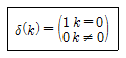
- 1
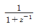
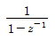
- 1/z
(정답률: 9%)
75. 응답이 최종값의 10[%]에서 90[%]까지 되는데 요하는 시간은?
- 상승시간(rise time)
- 지연시간(delay time)
- 응답시간(response time)
- 정정시간(setting time)
(정답률: 14%)
76. 논리식 중 다른 값을 나타내는 논리식은?
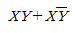
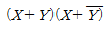
- X(X＋Y)
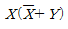
(정답률: 9%)
77. ω가 0에서 ∞까지 변화하였을 때 G(jw)의 크기와 위상 각을 극좌표에 그린 것으로 이 궤적을 표시하는 선도는?
- 근궤적도
- 나이퀴스트선도
- 니콜스선도
- 보오드선도
(정답률: 12%)
78. 특성방정식이 실수계수를 갖는 S의 유리함수일 때 근궤적은 무슨 축에 대하여 대칭인가?
- 실수측
- 허수측
- 대상측이 없다.
- 원점
(정답률: 12%)
79. G(jω) = j0.1ω에서 ω = 0.01[rad/sec] 일 때, 계의 이득[dB]는 얼마인가?
- -100
- -80
- -60
- -40
(정답률: 12%)
80. 루스 후르비쯔 판별법에서 F(s)=s3 + 4s2 + 2s + K=0에서 시스템이 안정하기 위한 K의 범위를 구하시오?
- 0 < K < 8
- -8 < K < 0
- 1 < K < 8
- -1 < K < 8
(정답률: 9%)
5과목: 전기설비기술기준 및 판단기준
81. 시가지에 시설하는 통신선은 특별고압 가공전선로의 지지물에 시설하여서는 아니된다. 그러나 통신선이 지름 몇 mm이상의 절연전선 또는 이와 동등 이상의 세기및 절연효력이 있는 것이면 시설이 가능한가?
- 4
- 4.5
- 5
- 5.5
(정답률: 7%)
82. 154kV 가공전선을 지지하는 애자장치의 50% 충격섬락전압 값이 그 전선의 근접한 다른 부분을 지지하는 애자장치의 값이 몇 % 이상이고, 또한 위험의 우려가 없도록 하면 시가지 기타 인가가 밀집하는 지역에 시설하여도 되는가?
- 100
- 1⑤
- 110
- 115
(정답률: 7%)
83. 전원측 전로에 시설한 배선용 차단기의 정격 전류가 몇 A이하의 것이면 이 전로에 접속하는 단상 전동기에는 과부하 보호장치를 생략할 수 있는가?
- 15
- 20
- 30
- 50
(정답률: 7%)
84. 일반 주택의 저압 옥내배선을 점검하였더니 다음과 같이 시공되어 있었다. 잘못 시공된 것은?
- 욕실의 전등으로 방습 형광등이 시설되어 있다.
- 단상 3선식 인입개폐기의 중성선에 등만이 접속되어 있었다.
- 합성수지관공사의 관의 지지점간의 거리가 2m로 되어 있었다.
- 금속관공사로 시공하였고 IV전선을 사용하였다.
(정답률: 8%)
85. 고압 가공인입선 등을 다음과 같이 시설하였다. 시설 방법이 옳지 않은 것은?
- 고압 가공인입선 아래에 위험표시를 하고 지표상 3.5m 높이에 시설하였다.
- 전선은 5m의 경동선을 사용하였다.
- 애자사용공사로 시설하였다.
- 15m 떨어진 다른 수용가에 고압 인접인입선을 시설하였다.
(정답률: 7%)
86. 전로의 절연 원칙에 따라 대지로부터 반드시 절연하여 야 하는 것은?
- 전로의 중심점에 접지공사를 하는 경우의 접지점
- 계기용 변성기의 2차측 전로에 접지공사를 하는 경우의 접지점
- 저압 가공전선로에 접속되는 변압기
- 시험용 변압기
(정답률: 7%)
87. 저압의 전선로 중 절연부부의 전선과 대지간의 절연저항은 사용전압에 대한 누설전류가 최대공급전류의 몇분의 1을 넘지 아니하도록 유지하여야 하는가?
- 1,000
- 2,000
- 3,000
- 5,000
(정답률: 11%)
88. 차량, 기타 중량물의 압력을 받을 우려가 없는 장소에 지중 전선을 직접 매설식에 의하여 매설하는 경우에는 매설 깊이를 몇 cm 이상으로 하여야 하는가?
- 40
- 60
- 80
- 100
(정답률: 10%)
89. 방전등용 안정기로부터 방전관까지의 전로를 무엇이라고 하는가?
- 소세력회로
- 편등회로
- 급전선로
- 약전류 전선로
(정답률: 9%)
90. 아크용접장치의 용접변압기에서 용접접극에 이르는 부분에 사용할 수 없는 전선은?
- 2종 캡타이어케이블
- 3종 캡타이어케이블
- 용접용 케이블
- 비닐캡타이어케이블
(정답률: 9%)
91. 고압 지중전선이 지중 약전류전선 등과 접근하여 이격거리가 몇 cm이하인 때에는 양 전선 사이에 견고한 내화성의 격벽을 설치하는 경우 이외에는 지중전선을 견고한 불연성 또는 난연성의 관을 넣어 그 관이 지중약전류전선 등과 직접 접촉되지 않도록 하여야 하는가?
- 15
- 20
- 25
- 30
(정답률: 9%)
92. 풀용 수중조명등에 사용되는 절연변압기의 2차측 전로의 사용전압이 몇 V를 넘는 경우에 그 전로에 자기가 생겼을 때 자동적으로 전로를 차단하는 장치를 하여야하는가?
- 30
- 60
- 150
- 300
(정답률: 8%)
93. 가공 접지선을 써서 제2종 접지공사를 하는 경우 변압기의 시설 장소로부터 몇 m 까지 떼어놓을 수 있는가?
- 50
- 100
- 150
- 200
(정답률: 8%)
94. 특별고압 가공전선로에 사용되는 B종 철주 중 각도형은 전선로 중 최소 몇 도를 넘는 수평각도를 이루는 곳에 사용되는가?
- 3
- 5
- 8
- 10
(정답률: 8%)
95. 직류귀선에 궤도 근접부분이 금속제 지중관로와 1km안에 접근하는 경우, 금속제 지중관로에 대한 전식작용의 장해를 방지하기 위한 귀선의 시설방법으로 옳은 것은?
- 귀선은 정극성으로 할 것
- 귀선용 궤조의 이음매 저항을 합친 값은 그 구간의 궤조 자체의 조항의 30% 이하로 유지할 것
- 귀선용 궤조는 특수한 곳 이외에는 깊이 50m 이상이 되도록 연속하여 용접할 것
- 귀선의 궤도 근접부분에 1년간의 평균전류가 통할때에 새기는 전위차는 그 구간안의 어느 두 점사이 에서도 2V 이하일 것
(정답률: 9%)
96. 다음의 공사에 의한 저압 옥내배선 중 사용되는 전선이 반드시 절연전선이 아니라도 상관없는 공사는?
- 합성수지관공사
- 금속관공사
- 버스덕트공사
- 플로어덕트공사
(정답률: 10%)
97. 무대, 무대마루 밑, 오케스트라 박스, 영사실 기타 사람이나 무대 도구가 접촉할 우려가 있는 곳에 시설하는 저압 옥내배선, 전구선, 또는 이동전선은 사용전압이 몇 V 미만이어야 하는가?
- 60
- 110
- 220
- 400
(정답률: 15%)
98. 철도∙궤도 또는 자동차도의 전용 터널안의 터널내 전선로의 시설방법으로 틀린 것은?
- 저압전선으로 지름 2.0mm의 경동선을 사용하였다.
- 고압전선은 케이블공사로 하였다.
- 저압전선을 애자사용공사에 의하여 시설하고 이를 궤조면상 또는 노면상 2.5m 이상으로 하였다.
- 저압전선을 가요전선관공사에 의하여 시설하였다.
(정답률: 8%)
99. 빙설이 많은 지방이고 인가가 많이 연접된 장소에 시설하는 가공전선로의 구성재 중 병종풍압하중의 적용을 할 수 없는 것은?
- 저압 또는 고압가공 전선로의 가섭선
- 저압 또는 고압 가공 전선로의 지지물
- 35,000V 이하의 전선에 특별고압 절연전선을 사용하는 특별고압 가공전선로의 지지물
- 35,000V 이상인 특별고압 가공전선로의 지지물에 시설하는 가공전선
(정답률: 8%)
100. 욕탕의 양단에 판상의 전극을 설치하고, 그 전극 상호간에 미약한 교류전압을 가하여 입욕자에게 전기적 자극을 주는 전기욕기의 전원변압기 2차측 전로의 사용 전압은 몇 V이하인 것을 사용하여야 하는가?
- 5
- 10
- 30
- 60
(정답률: 5%)
이유는 각 면에서 나오는 광속이 다르기 때문이다. 예를 들어, 1번 면에서 나오는 광속이 100(lm)이고, 2번 면에서 나오는 광속이 200(lm)이라면, 전체 광속은 100 + 200 = 300(lm)이 된다. 따라서, 광원의 전 광속을 구할 때는 각 면에서 나오는 광속을 모두 더해야 한다.